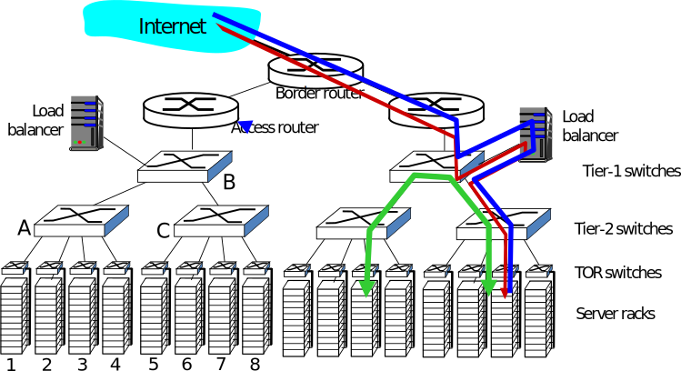
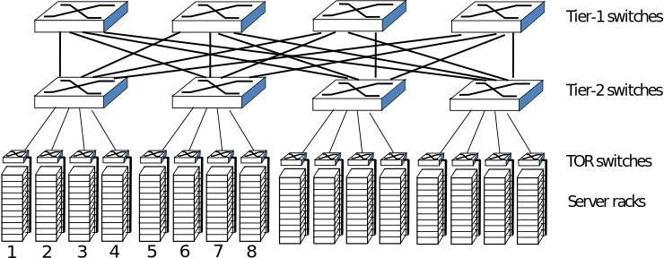
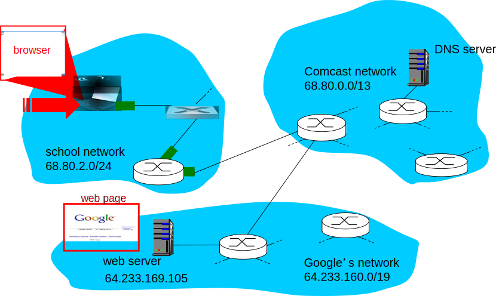
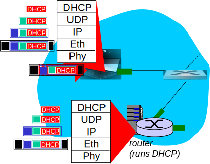
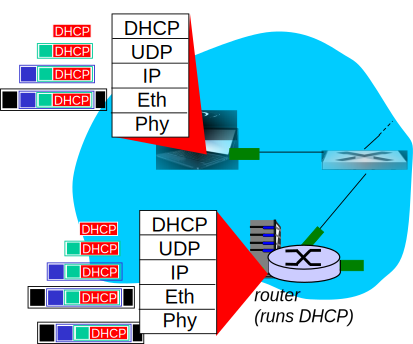
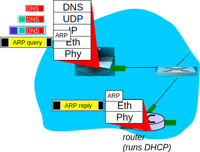
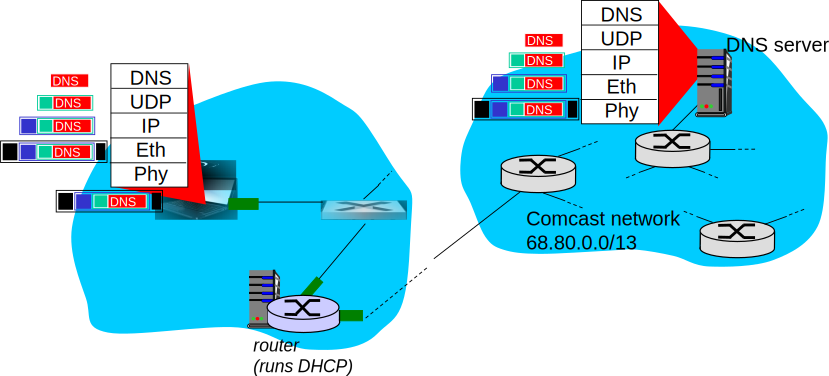
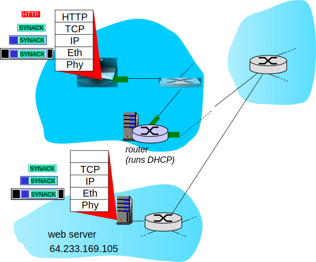
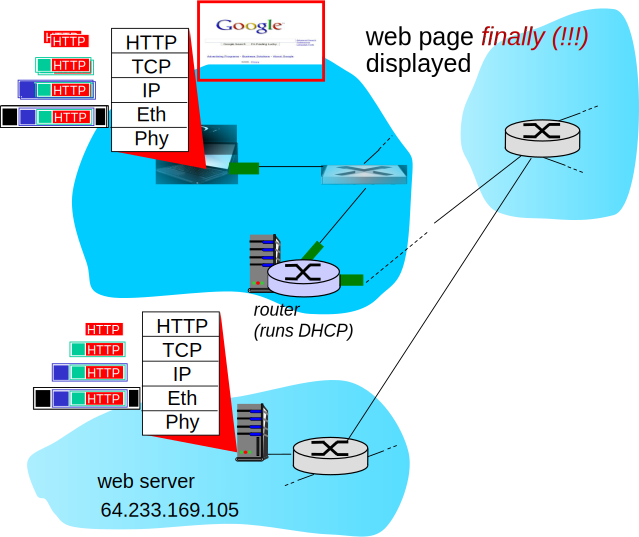

Roteadores MPLS de borda adicionam label a cada pacote de acordo com destino, outros critérios.
Tabelas de encaminhamento em cada nó associam labels a portas de saída.
Protocolos de sinalização configuram labels nas tabelas de encaminhamento dos roteadores.
Outros detalhes:
Labels podem ser empilhados: roteamento hierárquico.
Classes de tráfego podem ser definidas.
Proposto com IP em mente, mas pode ser utilizado com outras combinações de protocolos das camadas 2 e 3.
Estudo de Caso: Redes de Data Centers.
Redes de Data Centers (I)
Dezenas (ou centenas) de milhares de hosts, geralmente fortemente acoplados, próximos.
E-business (e.g., amazon).
Servidores de conteúdo (e.g., youtube, Akamai, Apple, Microsoft).
Ferramentas de busca (e.g., google, yahoo).
Desafios:
Múltiplas aplicações, cada uma servindo quantidades enormes de usuários.
Gerenciamento/balanceamento de carga, evitar gargalos de processamento, rede e dados.
Redes de Data Centers (II)

Balanceador de carga: roteamento na camada de aplicação.
Recebe requisições de clientes externos.
Direciona carga dentro do Data Center.
Retorna resultado para o cliente.
Esconde funcionamento interno do cliente.
Redes de Data Centers (III)
Alto grau de interconexão entre switches e racks.
Aumento de vazão entre racks (múltiplos caminhos possíveis).
Aumento no grau de confiança (redundância).

Um Dia na Vida de uma Requisição Web
Síntese: Um Dia na Vida de uma Requisição Web
Jornada pela pilha de protocolos finalmente completa.
Aplicação, transporte, rede e enlace.
Juntando tudo: síntese.
Objetivo: identificar, revisar, entender protocolos (de todas as camadas) envolvidos em um cenário aparentemente simples: a requisição de uma página web.
Cenário: estudante conecta laptop à rede do campus, acessa www.google.com.
Um Dia na Vida de uma Requisição Web: Cenário

Um Dia na Vida... Conectando-se à Internet (I)

Laptop precisa de um endereço IP, do endereço IP do roteador de primeiro salto, e do servidor de DNS: usar DHCP.
DHCP Request encapsulado em UDP, encapsulado em IP, encapsulado em 802.3 (Ethernet).
Quadro Ethernet enviado em broadcast (dest. FF:FF:FF:FF:FF:FF) na LAN, receptor executando servidor DHCP.
Ethernet demultiplexado para IP, demultiplexado para UDP, demultiplexado para DHCP.
Um Dia na Vida... Conectando-se à Internet (II)

Servidor DHCP formata um DHCP ACK, contendo IP do cliente, endereço do roteador de primeiro salto e do servidor de DNS.
Encapsulamento no servidor DHCP, encaminhamento do quadro (auto-aprendizado nos switches) pela LAN, demultiplexações no cliente.
Cliente DHCP recebe DHCP ACK.
Agora, cliente possui IP e sabe IP do roteador de primeiro salto e servidor de DNS.
Um Dia na Vida... ARP (antes de DNS e HTTP)

Antes de enviar requisição HTTP, cliente precisa resolver IP de www.google.com: DNS.
Cria requisição DNS, encapsulada em UDP, encapsulada em IP, encapsulada em 802.3. Mas qual o MAC de destino?
MAC da interface do roteador de primeiro salto: ARP.
ARP query enviado em broadcast, recebido pelo roteador, que responde com ARP reply, contendo MAC da sua interface.
Cliente agora conhece endereço MAC do primeiro salto. Pode enviar quadro contendo a query DNS.
Um Dia na Vida... usando DNS

Datagrama IP contendo query DNS encaminhado pelo switch da LAN do cliente para o roteador de primeiro salto.
Datagrama IP encaminhado da rede do campus para rede do ISP, roteado (tabelas criadas pelo protocolos RIP, OSPF, IS-IS e/ou BGP) até o servidor DNS.
Demultiplexado até o serviço de DNS.
Servidor DNS responde ao cliente com endereço IP de www.google.com.
Um Dia na Vida... Conexão TCP Transportando HTTP

Para enviar requisição HTTP, cliente abre socketTCP para servidor Web.
Segmento SYN do TCP (passo 1 do 3-way handshake) enviado usando roteamento inter-domínio para o servidor web.
Servidor web responde com SYNACK (passo 2).
Conexão TCP estabelecida!
Um Dia na Vida... Requisição/Resposta HTTP

Requisição HTTP enviada pelo socket TCP.
Datagrama IP contendo requisição roteado até www.google.com.
Servidor web envia resposta HTTP (contendo a página web).
Datagrama IP contendo a resposta é roteado de volta ao cliente.
Resumo da Aula...
Redes de Data Centers:
Alto grau de interconectividade entre switches.
Loops físicos propositais.
Múltiplos caminhos alternativos entre elementos da rede.
Redundância, confiabilidade.
Problemas são evitados com configurações corretas.
Pilha de protocolos (quase) completa:
TCP/IP é bastante complexo.
Da conexão física do dispositivo, ao recebimento de dados, há muitos passos.
Obtenção de endereço IP (DHCP).
Traduções de endereços via ARP.
Roteamento.
Encapsulamentos, desencapsulamentos.
Estabelecimento de conexões, handshakes.
...
Sumário do Capítulo 5
Princípios dos serviços da camada de enlace.
Detecção e correção de erros.
Compartilhamento de um canal físico: acesso múltiplo.
Endereçamento na camada de enlace.
Implementações de várias tecnologias da camada de enlace.
Ethernet.
LANs baseadas em switches, VLANs, STP.
MPLS.
Síntese: um dia na vida de uma requisição web.
Conceitos Importantes
Objetivos da camada de enlace.
Quadro.
Detecção e correção de erros.
Paridade, CRC, Checksum, FEC.
Enlaces.
Full-duplex vs. half-duplex.
Ponto-a-ponto vs. difusão.
Protocolos de acesso múltiplo.
Acesso aleatório vs. particionamento de canal vs. acesso alternado.
TDMA, FDMA, CSMA, passagem de token, polling.
Endereço MAC.
Protocolo ARP.
Ethernet: 802.3.
Switches vs. hubs.
Auto-aprendizagem, tabela de encaminhamento, inundação.
VLANs.
STP.
MPLS.
Leitura e Exercícios Sugeridos
Um dia...
Páginas 363 a 367 do Kurose (Seção 5.9).
Problema 37 do capítulo 5 do Kurose.
Resumo do capítulo:
Páginas 367 e 368 do Kurose (Seção 5.10).
Exercício sugerido: instale o Wireshark em um computador na sua casa e refaça a demonstração do “Um dia...”.
Vamos Respirar um Pouco
Jornada pelas várias camadas da pilha de protocolos está completa.
Exceto pela camada física.
Compreensão sólida dos princípios e prática de redes.
O assunto de redes está completo? Não, há vários tópicos de interesse ainda.
Redes sem fio.
Mobilidade.
Multimídia.
Gerência de redes.
Próxima Aula...
Começaremos um novo capítulo.
Capítulo 6: Redes Sem Fio e Mobilidade.
Na próxima aula, cobriremos:
Alguns conceitos iniciais sobre redes sem fio e mobilidade.
Algumas ideias básicas sobre como ocorrem transmissões na camada física.